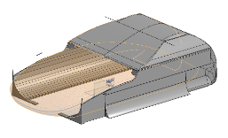
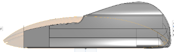
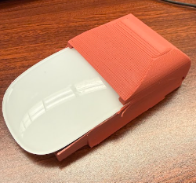
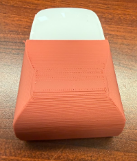
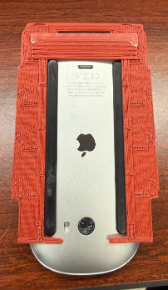
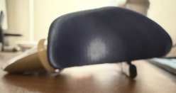

The final Magic Snap shell fitted to the Magic Mouse — team project with Ashmeet Bedi and Niketh Raghu ("Flow State").
Overview
Though the Apple Magic Mouse is sleek in appearance, it's inherently flawed due to three interrelated design issues. Its thinness forces the user into a constant "claw grip," which can cause forearm extensor strain. Its plastic skates create unnecessary friction against surfaces, making the mouse feel heavier than it should during use. And its rear-end charging port makes the mouse inoperable while charging and causes wear on the surface through progressive scratching.
View full presentation slides →
Design Constraints
- Added mass from the ergonomic shell and magnets must be offset by a reduced coefficient of friction.
- Must be able to remove and reinsert the mouse with ease.
- Must still be able to use multi-touch and gesture functionality.
- Sensor's tracking accuracy must remain unhindered and precise.
- Must be comfortable and ergonomically compliant for both short and long term usage.
- Must account for 3D-print shrinkage and tolerances to ensure a secure design.
Validating the Problem
Before committing to a design direction, we surveyed potential users to confirm the problem was worth solving.
Design Goals
This project aimed to solve all three problems through a complete redesign. The objective was a modular input device that allows for natural support from the palm arch, uses glass feet instead of plastic skates, and includes a docking station that charges the mouse vertically — removing downtime and surface damage altogether. All modifications were planned to maintain full functionality with the macOS multitouch system.
Concept Generation & Decision Matrix
Each team member independently designed a concept, and we scored all three against weighted criteria — weight, price, core function, minimalism, and comfort — to pick a direction as a team. Ashmeet's design scored highest overall and became the foundation for the shared design that followed.


One of the individual concepts submitted for the decision matrix vote — a boxier shell shape with cutouts, ultimately not the direction the team chose.
CAD Design
The ergonomic hump was modeled directly around the physical mouse to guarantee a precise fit.


Full assembly CAD renders — the hump shell over the base ring that clips around the mouse.
Before printing, each shell was meshed to check for printability and to preview infill and support structure.




Print-preview meshes used to check printability and compare hump curve iterations before sending each version to the printer.
First Prototype
Our first print surfaced real fitment issues you can't catch in CAD alone: the top portion of the sides came out thin and weak, the internal supports under the rear hump occasionally obscured the mouse's click mechanism, and the rear hump itself was too aggressive for a full palm grip — better suited to a fingertip or claw grip. Fitment was close but not quite there; the shell could have been wider.




First prototype: raw print and initial fitment test on the actual mouse.
Second Prototype
The second round moved to a two-piece design: a separate base ring that clips around the mouse's body, and a hump shell that sits on top. This is also the version we shared publicly as an open-source model.


Print-preview meshes for the second prototype's two-piece hump-and-ring design.


Second prototype: base ring and hump printed as separate pieces. View the open-source model on Printables →


Fitment testing: the base ring on the mouse alone, then the full hump-and-ring assembly.
All interviews pointed to this version being noticeably more comfortable to use, and fitment was very good right off the print bed — only minor cleanup with an X-acto knife was needed. The one problem left unsolved was charging: Apple's Magic Mouse disables Bluetooth as soon as it detects a charge, so a real charging solution still needed to be designed.
Third Prototype
The third round, under the "Flow State" team name, focused on solving the charging problem. We tested a dedicated charging base printed separately from the mouse shell — but the print quality on these came out rougher than we'd hoped, and the base itself was too large, leaving the cable sitting too loose inside it. We also ran into a height problem: the charging connection needed extra clearance at the rear of the mouse, so we tested resting the hump on a raised riser block to check how much extra height would be needed.


Third prototype: early charging-base prints — rougher finish and an oversized fit — plus a riser test for the height the charging connection needed at the rear.
We also tested taping and strapping the charging cable directly to the underside of the mouse as a rougher, interim way to manage the cable while the dedicated base was still being worked out.


A navy color test for the hump, and the interim cable-strapping test.
Final Prototype
The final shell kept the comfort of the refined hump and finalized the two-part magnetic design: a hump that snaps onto a base ring so it detaches for portability and leaves room for interchangeable hump shapes in the future. It also moved to an iridescent, color-shifting finish, paired with the mouse's original glossy white housing showing through the front and underside. Additional glass skates were added underneath to counter the added weight from the shell and magnets while keeping glide smooth.


The finished shell with its iridescent coating, and the magnetic hump-to-base connection that keeps it modular.
Cost Breakdown
Per unit, our prototype cost effectively nothing thanks to lab filament and repurposed magnets — but pricing out full-scale components gives a realistic per-unit cost:
Future Plans
- Custom hump shapes: design differently shaped humps that magnetically snap onto the same base, letting users tailor the fit to their own hand.
- Smarter charging base: explore modular charging bases with added desk-tool functionality, like a built-in lamp, clock, or fan.
- Custom charging hardware: design our own wiring and connectors, including 3D-printed conductive paths, to cut manufacturing cost and improve reliability.
- Use while charging: override the mouse's default behavior of disabling Bluetooth while charging, so it stays usable on the dock.
What I Learned
Designing a model for a physical object was a completely new challenge, since I had to build the design around something material rather than starting from scratch. The process of exporting the model and printing it made me much more aware of parameters like infill density and support structures.
Reflection
This project made me realize how vital it is not to limit myself to a single type of solution, but to stay prepared to explore different directions when creating something new.